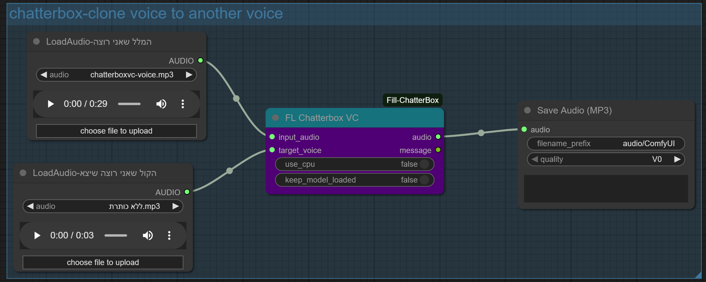
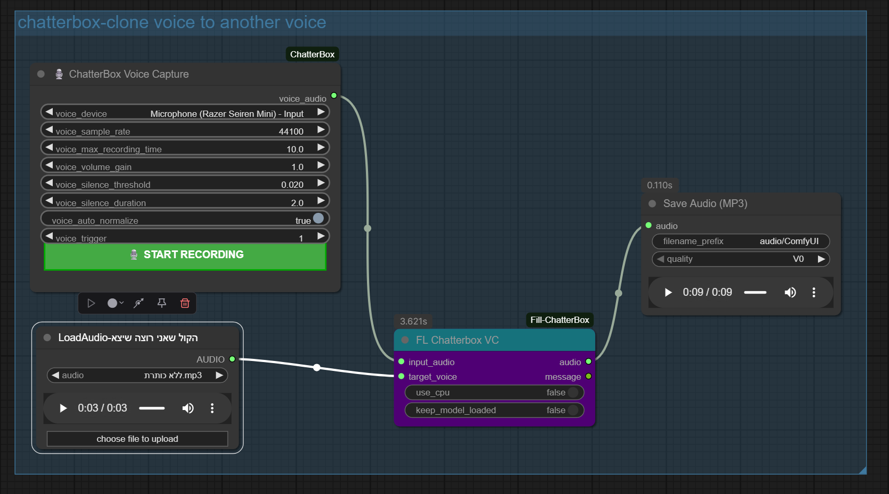
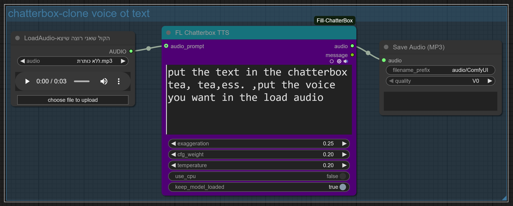

ברוכים הבאים למדריך המקיף לעבודה עם ComfyUI! במדריך זה נתמקד בשני תהליכים מרכזיים ליצירת קול באמצעות בינה מלאכותית: העברת קול קיים על מלל אחר (Voice-to-Voice) ויצירת קול מטקסט כתוב (Text-to-Voice).
תהליך זה מאפשר לכם לקחת קטע קול אחד ולהשתמש בו כדי לדבב טקסט חדש, תוך שמירה על מאפייני הקול המקורי.
הנה צילום מסך של ה-Workflow המלא ששימש ליצירת סרטון ה-"קול מקול" ב-ComfyUI, כאשר קול המקור נטען מקובץ:
כאן תוכלו להוריד את קובץ ה-Workflow הספציפי ששימש אותי ליצירת "קול מקול" באמצעות טעינת קובץ קול:
הקובץ מכיל את כל הגדרות ה-Nodes והחיבורים שתצטרכו כדי לשחזר את ה-Workflow הזה ב-ComfyUI שלכם.
במקום לטעון קובץ קול קיים, באפשרותכם גם להקליט קול ישירות בתוך ה-Workflow. הנה צילום מסך של Workflow המשלב הקלטה חיה:
הנה קובץ ה-Workflow (JSON) עבור תהליך הקלטת הקול:
שיטה זו נוחה במיוחד לבדיקות מהירות ולזרימת עבודה יעילה יותר.
כאן תוכלו להוסיף הסברים מפורטים על ה-Nodes השונים ב-Workflow הזה, כמו Node לטעינת קול מקור (או הקלטה), Node לעיבוד המלל החדש, ו-Node לסנכרון והפקה של הקול הסופי.
בשלב זה נראה כיצד להפוך טקסט כתוב לקול אנושי טבעי לחלוטין, ללא צורך בקול מקור קיים.
הנה צילום מסך של ה-Workflow המלא ששימש ליצירת סרטון ה-"קול מטקסט" ב-ComfyUI:
כאן תוכלו להוריד את קובץ ה-Workflow הספציפי ששימש אותי ליצירת "קול מטקסט":
הקובץ מכיל את כל הגדרות ה-Nodes והחיבורים שתצטרכו כדי לשחזר את ה-Workflow הזה ב-ComfyUI שלכם.
תהנו.